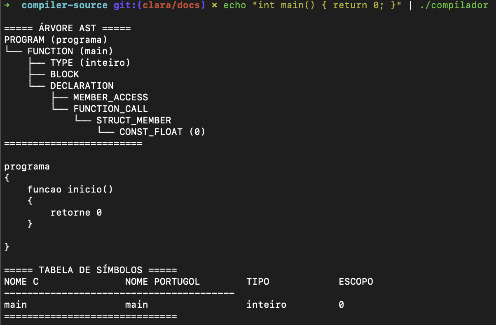
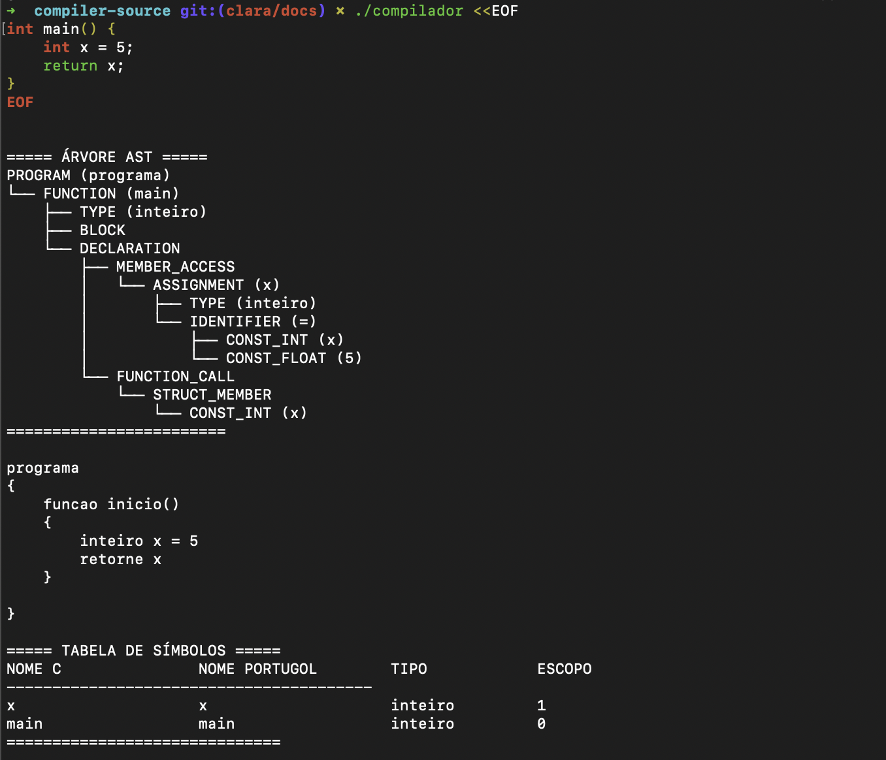

Instalação
Este guia apresenta as instruções para instalar e executar o Compilador de C para Portugol em diferentes sistemas operacionais. O projeto pode ser compilado localmente com make.
Pré-requisitos
Antes de instalar o compilador, certifique-se de que seu sistema possui os seguintes componentes instalados:
- GCC (compilador C)
- Flex (versão recomendada: 2.6.4)
- Bison (versão recomendada: 3.8.2)
- Make (automatizador de build)
Para instalar em distribuições baseadas em Debian (como Ubuntu):
Para instalar em MACOS, Instale as dependências com Homebrew:
No Windows, recomenda-se o uso do WSL (Windows Subsystem for Linux) para garantir compatibilidade com o ambiente de desenvolvimento.
Usando WSL:
- Instale o WSL e abra um terminal Ubuntu.
Instalação
- Clone o repositório:
git clone https://github.com/ccarlaa/Compiladores---Grupo-5.git
cd Compiladores---Grupo-5/compiler-source
- Compile o projeto:
- Execute um teste de verificação:
Você pode testar o compilador diretamente no terminal com um código simples:
Exemplo:
A saída esperada é a impressão da Árvore AST, o código compilado e a tabela de símbolos:

Ou, para códigos maiores e com múltiplas linhas, use:
Exemplo:
A saída esperada é a impressão da Árvore AST, o código compilado e a tabela de símbolos:

Solução de Problemas
Caso ocorra algum erro durante a instalação:
- Verifique se todas as dependências estão instaladas corretamente.
- Certifique-se de que os scripts tenham permissão de execução:
- Consulte mensagens de erro exibidas no terminal para identificar a causa.
- No caso de problemas com o
make, executemake cleanantes de recompilar.